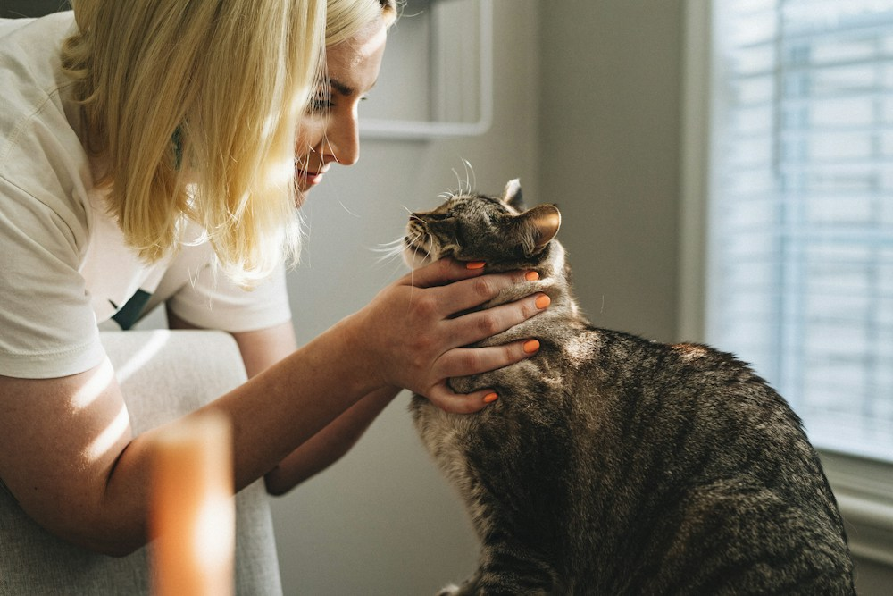

♡
Gentle by nature
A calm, friendly approach helps pets feel safe and cared for.
A kind welcome for every paw
Thoughtful veterinary care, gentle hands and a familiar face. We’re here to help your best friend feel their very best — through every stage of life.
The Furry Family difference
Your pet is one of a kind. We take the time to get to know them — and the people who love them.
A calm, friendly approach helps pets feel safe and cared for.
From first vaccinations to lifelong wellness, we’re by your side.
We listen, explain things clearly and treat you like family, too.
Here for every chapter
From everyday essentials to extra support when it matters, we’ll help you find the right care for your furry family member.
Health checks, vaccinations, nutrition advice and preventative care to keep tails wagging.
A warm start for the newest member of your family, with guidance for every first.
Clear advice, careful treatment and a comforting team looking after them all the way.
Gentle dental checks and treatment to help your pet stay comfortable and bright.
Extra attention for changing needs, so older companions can enjoy their best days.
From a new concern to a quick question, we’re happy to help you work out what’s next.

A clinic with a big heart
They’re the hello at the door, the warm spot on the couch and a much-loved part of your family. We built our clinic around caring for them — and supporting you.
Kind words from our community
A few notes from the people and pets who make our days special.
“The team made our nervous little rescue feel so safe. We left feeling listened to and really cared for.”
SSarah & Milo“So kind, patient and reassuring. It’s lovely to have a vet who remembers our dog’s name — and his quirks!”
JJames & Alfie“From our kitten’s first visit, we’ve felt completely at home. They explain everything and never rush us.”
MMichelle & PippinWe’d love to meet you
Choose the clinic that works best for you and your furry family.